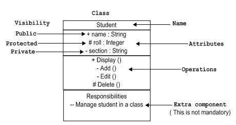
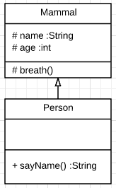
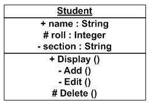

Use Case Diagrams
Use case diagrams are used to gather the requirements of a system including internal and external influences are modelled to present the outside view. They consider the actors involved with a system and what functions each should be able to perform or have access to.
The main purposes of use case diagrams are...
- Used to gather the requirements of a system.
- Used to get an outside view of a system.
- Identify the external and internal factors influencing the system.
- Show the interaction among the requirements are actors.
(Sources:
Creately: The Complete Guide to UML Diagram Types with Examples
Tutorials Point: UML - Use Case Diagrams
)
Updated: 28/06/2017
Class Diagrams
Class diagrams are structure diagrams which show the structure of the systems design at the level of classes. They also define the relationships and associations between them.
Class diagrams are a way of designing and analysis the static view of an application, describing the responibilities of a system and
These diagrams are commonly made up of three sections, the name, attributes and methods.
The basic notation of a class diagram

An example of the generalisation arrow used to depict inheritance.
In the example the attributes of Mammal, name and age, and the method
breath are inherited by Person. These are ommited from the Person class
diagram. If breath was overriden in the Person class it would then be
included.

Underlining identifies static members.
(Sources:
uml-diagrams.org: UML Class and Object Diagrams Overview
Tutorials Point: UML - Class Diagram
Stack Overflow: Show inherited methods etc in Visual Paradigm
)
Updated: 28/06/2017
UML Notation
UML notations are the most important elements in modeling. Appropriate use of notations is very important for making a meaningful model. The model is useless, unless its purpose is depicted properly.
Class Notation
Object Notation
The notation for object diagrams is similar to class diagrams only the name is underlined.
Generalisation Arrow
Used to show the relationship between a generalised element (interface, abstract class, superclass ect.) and a specialised element (a class that inherits, implements, includes ect.).
(Sources:
Tutorials Point: UML - Basic Notations
Microsoft developer network: UML Class Diagrams - Reference
)
Updated: